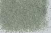

|
|
(For further information on spectroscopy, see:
http://speclab.cr.usgs.gov)
TITLE: Uralite HS345 DESCRIPT
DOCUMENTATION_FORMAT: MINERAL
SAMPLE_ID: HS345
MINERAL_TYPE: Inosilicate
MINERAL: Uralite (Amphibole group)
FORMULA: Ca2(Mg,Fe2+)5(Si8O22)(OH,F)2
FORMULA_HTML: Ca2(Mg,Fe2+)5(Si8O22)(OH,F)2
COLLECTION_LOCALITY: Calumet, Colorado
ORIGINAL_DONOR: Hunt and Salisbury Collection
CURRENT_SAMPLE_LOCATION: USGS Denver Spectroscopy Laboratory
ULTIMATE_SAMPLE_LOCATION: USGS Denver Spectroscopy Laboratory
SAMPLE_DESCRIPTION:
I-15 Uralite 345B--Calumet, Colo. Ca2(Mg,Fe2+)5(Si8O22)(OH,F)2: This is a hornblende formed by alteration of pyroxenes. It is generally actinolitic in composition, but often contains aluminum (Deer and others, 1963). Its spectrum shows a doubled iron feature near 0.75 and 1.0µ, the former due to Fe3+ substituting for Al, the latter due to Fe2+ substituting for Mg. The 1.4µ hydroxyl feature is considerably weaker than the 2.32µ and 2.38µ hydroxyl bands. The 1.9µ band indicates a slight amount of included water."
Sieve interval 74 - 250µm.
Hunt, G.R., J.W. Salisbury, and C.J. Lenhoff, 1973, Visible and near-infrared spectra of minerals and rocks: VI. Additional silicates. Modern Geology, v. 4, p. 85-106.
IMAGE_OF_SAMPLE:

END_SAMPLE_DESCRIPTION.
XRD_ANALYSIS:
Amphibole - major (hornblende?)
Clinopyroxene - major (augite?)
Unidentifiable residual
Note: Uralite is described as an amphibole psuedomorphous after
pyroxene.
Konnert, Judith and Marta Flohr, 1992, unpublished data, USGS Reston, VA.
END_XRD_ANALYSIS.
COMPOSITIONAL_ANALYSIS_TYPE: None # XRF, EM(WDS), ICP(Trace), WChem
COMPOSITION_TRACE:
COMPOSITION_DISCUSSION:
END_COMPOSITION_DISCUSSION.
MICROSCOPIC_EXAMINATION:
END_MICROSCOPIC_EXAMINATION.
SPECTROSCOPIC_DISCUSSION:
END_SPECTROSCOPIC_DISCUSSION.
SPECTRAL_PURITY: 1b2c3c4_ # 1= 0.2-3, 2= 1.5-6, 3= 6-25, 4= 20-150 microns
| LIB_SPECTRA_HED: | where | Wave Range | Av_Rs_Pwr | Comment |
|---|---|---|---|---|
| LIB_SPECTRA: | splib04a r 5085 | 0.2-3.0µm | 200 | g.s.= |
| LIB_SPECTRA: | splib05a r 6944 | 0.2-3.0µm | 200 | g.s.= |
| LIB_SPECTRA: | splib06a r 23325 | g.s.= | ||
| LIB_SPECTRA: | splib06a r 23337 | g.s.= |
{kind=link}